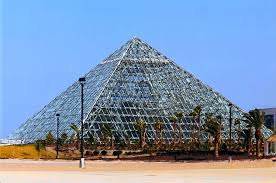
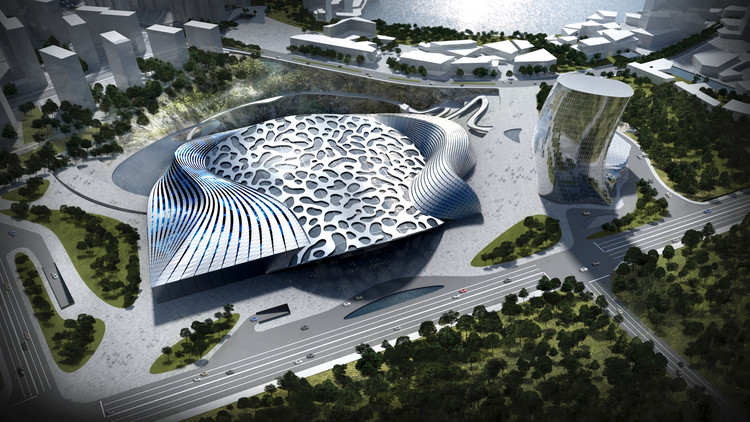

Welcome to Futuristic Architecture
Architecture has evolved over the years and through 20th century. Complex architectural structures have fascinated human minds. It has stimulated them to innovate and built ultra-modern buildings. Today, creativity with technology has paved way for us to dream our own designs, visualize them virtually and make it happen in reality. The idea of Futuristic architecture was from Italy which started in the early 20th century. The flow of design or movement is a key characteristic of Futurist architecture. It encouraged the use of unique angles, hanging slopes, sharp edges, triangles, ovals, and domes.

Transforming our universe with beauty beyond our dreams
News
Architects Dreaming of a Future With No Buildings
FLORENCE, Italy — One recent afternoon, the architect Gian Piero Frassinelli, 81, stopped on a walk through a piazza near his home, and pointed at a fresco high above on a building’s facade. The illustration depicts an entourage of local luminaries, including Dante, the poet, and the painters Leonardo da Vinci and Giotto. Many would view the scene as a tribute to Florence’s historic golden age. For Frassinelli, however, it represents the city’s disrespect for its creative sons. “Until after their deaths, this city’s artists are destined to be rejected,” he said. As the last surviving core member of Superstudio, Frassinelli should know. That radical architecture collective galvanized the design world during a MoMA exhibition in 1972, and its futuristic vision zigzagged the globe. Although Superstudio built very few actual buildings, its witty photo collages and designs, presented in exhibitions and glossy magazine spreads, opened up new possibilities for what architecture and urban planning could be.

Images
Aequorea, the floating city

Cobra Towers, Kuwait

Bio-Pyramid
Cloud Capture

Ecorium, South Korea

Dragonfly Skyscraper, New York

Dawang Mountain Resort, China
Nomad: Skyscrapers on Mars

Underwater Hotel

Cities in the Sky